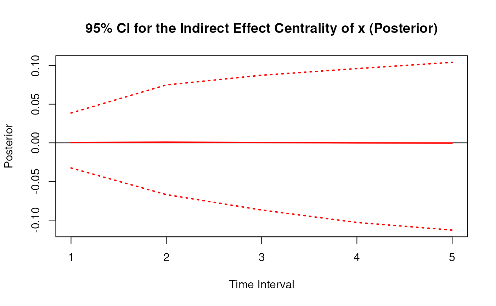
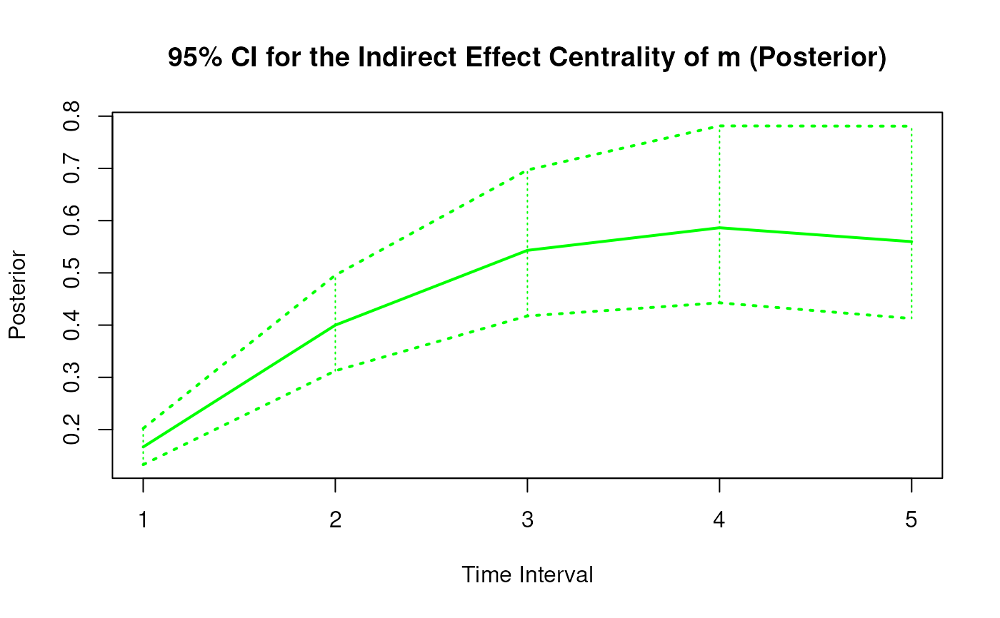
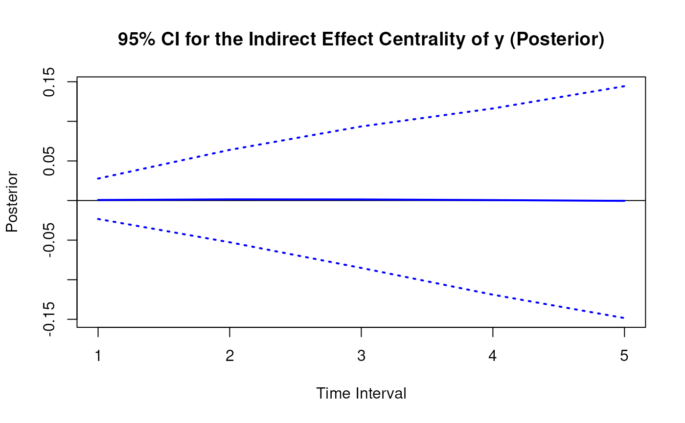

Posterior Distribution of the Indirect Effect Centrality Over a Specific Time Interval or a Range of Time Intervals
Source:R/cTMed-posterior-indirect-central.R
PosteriorIndirectCentral.RdThis function generates a posterior distribution of the indirect effect centrality over a specific time interval \(\Delta t\) or a range of time intervals using the posterior distribution of the first-order stochastic differential equation model drift matrix \(\boldsymbol{\Phi}\).
Arguments
- phi
List of numeric matrices. Each element of the list is a sample from the posterior distribution of the drift matrix (\(\boldsymbol{\Phi}\)). Each matrix should have row and column names pertaining to the variables in the system.
- delta_t
Numeric. Time interval (\(\Delta t\)).
- ncores
Positive integer. Number of cores to use. If
ncores = NULL, use a single core. Consider using multiple cores when number of replicationsRis a large value.
Value
Returns an object
of class ctmedmc which is a list with the following elements:
- call
Function call.
- args
Function arguments.
- fun
Function used ("PosteriorIndirectCentral").
- output
A list the length of which is equal to the length of
delta_t.
Each element in the output list has the following elements:
- est
Mean of the posterior distribution of the total, direct, and indirect effects.
- thetahatstar
Posterior distribution of the total, direct, and indirect effects.
Details
See TotalCentral() for more details.
References
Bollen, K. A. (1987). Total, direct, and indirect effects in structural equation models. Sociological Methodology, 17, 37. doi:10.2307/271028
Deboeck, P. R., & Preacher, K. J. (2015). No need to be discrete: A method for continuous time mediation analysis. Structural Equation Modeling: A Multidisciplinary Journal, 23 (1), 61–75. doi:10.1080/10705511.2014.973960
Ryan, O., & Hamaker, E. L. (2021). Time to intervene: A continuous-time approach to network analysis and centrality. Psychometrika, 87 (1), 214–252. doi:10.1007/s11336-021-09767-0
See also
Other Continuous Time Mediation Functions:
DeltaBeta(),
DeltaIndirectCentral(),
DeltaMed(),
DeltaTotalCentral(),
Direct(),
Indirect(),
IndirectCentral(),
MCBeta(),
MCIndirectCentral(),
MCMed(),
MCPhi(),
MCTotalCentral(),
Med(),
PosteriorBeta(),
PosteriorMed(),
PosteriorPhi(),
PosteriorTotalCentral(),
Total(),
TotalCentral(),
Trajectory()
Examples
phi <- matrix(
data = c(
-0.357, 0.771, -0.450,
0.0, -0.511, 0.729,
0, 0, -0.693
),
nrow = 3
)
colnames(phi) <- rownames(phi) <- c("x", "m", "y")
vcov_phi_vec <- matrix(
data = c(
0.002704274, -0.001475275, 0.000949122,
-0.001619422, 0.000885122, -0.000569404,
0.00085493, -0.000465824, 0.000297815,
-0.001475275, 0.004428442, -0.002642303,
0.000980573, -0.00271817, 0.001618805,
-0.000586921, 0.001478421, -0.000871547,
0.000949122, -0.002642303, 0.006402668,
-0.000697798, 0.001813471, -0.004043138,
0.000463086, -0.001120949, 0.002271711,
-0.001619422, 0.000980573, -0.000697798,
0.002079286, -0.001152501, 0.000753,
-0.001528701, 0.000820587, -0.000517524,
0.000885122, -0.00271817, 0.001813471,
-0.001152501, 0.00342605, -0.002075005,
0.000899165, -0.002532849, 0.001475579,
-0.000569404, 0.001618805, -0.004043138,
0.000753, -0.002075005, 0.004984032,
-0.000622255, 0.001634917, -0.003705661,
0.00085493, -0.000586921, 0.000463086,
-0.001528701, 0.000899165, -0.000622255,
0.002060076, -0.001096684, 0.000686386,
-0.000465824, 0.001478421, -0.001120949,
0.000820587, -0.002532849, 0.001634917,
-0.001096684, 0.003328692, -0.001926088,
0.000297815, -0.000871547, 0.002271711,
-0.000517524, 0.001475579, -0.003705661,
0.000686386, -0.001926088, 0.004726235
),
nrow = 9
)
phi <- MCPhi(
phi = phi,
vcov_phi_vec = vcov_phi_vec,
R = 1000L
)$output
# Specific time interval ----------------------------------------------------
PosteriorIndirectCentral(
phi = phi,
delta_t = 1
)
#>
#> Indirect Effect Centrality
#>
#> $`1`
#> interval est se R 2.5% 97.5%
#> x 1 0.0005 0.0124 1000 -0.0235 0.0247
#> m 1 0.1669 0.0191 1000 0.1314 0.2042
#> y 1 0.0003 0.0113 1000 -0.0214 0.0237
#>
# Range of time intervals ---------------------------------------------------
posterior <- PosteriorIndirectCentral(
phi = phi,
delta_t = 1:5
)
# Methods -------------------------------------------------------------------
# PosteriorIndirectCentral has a number of methods including
# print, summary, confint, and plot
print(posterior)
#>
#> Indirect Effect Centrality
#>
#> $`1`
#> interval est se R 2.5% 97.5%
#> x 1 0.0005 0.0124 1000 -0.0235 0.0247
#> m 1 0.1669 0.0191 1000 0.1314 0.2042
#> y 1 0.0003 0.0113 1000 -0.0214 0.0237
#>
#> $`2`
#> interval est se R 2.5% 97.5%
#> x 2 0.0013 0.0247 1000 -0.0455 0.0512
#> m 2 0.3992 0.0385 1000 0.3314 0.4754
#> y 2 0.0011 0.0221 1000 -0.0410 0.0458
#>
#> $`3`
#> interval est se R 2.5% 97.5%
#> x 3 0.0016 0.0303 1000 -0.057 0.0610
#> m 3 0.5407 0.0493 1000 0.451 0.6393
#> y 3 0.0013 0.0286 1000 -0.054 0.0594
#>
#> $`4`
#> interval est se R 2.5% 97.5%
#> x 4 0.0013 0.0328 1000 -0.0626 0.0667
#> m 4 0.5820 0.0552 1000 0.4845 0.6998
#> y 4 0.0008 0.0359 1000 -0.0714 0.0720
#>
#> $`5`
#> interval est se R 2.5% 97.5%
#> x 5 0.0008 0.0343 1000 -0.0663 0.0671
#> m 5 0.5535 0.0574 1000 0.4480 0.6814
#> y 5 0.0001 0.0438 1000 -0.0882 0.0838
#>
summary(posterior)
#> variable interval est se R 2.5% 97.5%
#> 1 x 1 0.0004507951 0.01242586 1000 -0.02354728 0.02473774
#> 2 m 1 0.1668894334 0.01914795 1000 0.13143976 0.20418456
#> 3 y 1 0.0002975135 0.01132914 1000 -0.02143712 0.02370861
#> 4 x 2 0.0013125080 0.02473373 1000 -0.04554643 0.05121462
#> 5 m 2 0.3991842830 0.03854076 1000 0.33144383 0.47544387
#> 6 y 2 0.0011146854 0.02205393 1000 -0.04104532 0.04584212
#> 7 x 3 0.0016008752 0.03025976 1000 -0.05701816 0.06102206
#> 8 m 3 0.5406663358 0.04934585 1000 0.45097951 0.63928863
#> 9 y 3 0.0013422581 0.02858741 1000 -0.05403860 0.05939284
#> 10 x 4 0.0012853140 0.03275031 1000 -0.06258501 0.06674891
#> 11 m 4 0.5819681069 0.05518477 1000 0.48451244 0.69979200
#> 12 y 4 0.0008434217 0.03587100 1000 -0.07140727 0.07195422
#> 13 x 5 0.0007580058 0.03427459 1000 -0.06631474 0.06713390
#> 14 m 5 0.5534976425 0.05741480 1000 0.44804490 0.68141787
#> 15 y 5 0.0000608132 0.04382563 1000 -0.08818055 0.08383041
confint(posterior, level = 0.95)
#> variable interval 2.5 % 97.5 %
#> 1 x 1 -0.02354728 0.02473774
#> 2 m 1 0.13143976 0.20418456
#> 3 y 1 -0.02143712 0.02370861
#> 4 x 2 -0.04554643 0.05121462
#> 5 m 2 0.33144383 0.47544387
#> 6 y 2 -0.04104532 0.04584212
#> 7 x 3 -0.05701816 0.06102206
#> 8 m 3 0.45097951 0.63928863
#> 9 y 3 -0.05403860 0.05939284
#> 10 x 4 -0.06258501 0.06674891
#> 11 m 4 0.48451244 0.69979200
#> 12 y 4 -0.07140727 0.07195422
#> 13 x 5 -0.06631474 0.06713390
#> 14 m 5 0.44804490 0.68141787
#> 15 y 5 -0.08818055 0.08383041
plot(posterior)


